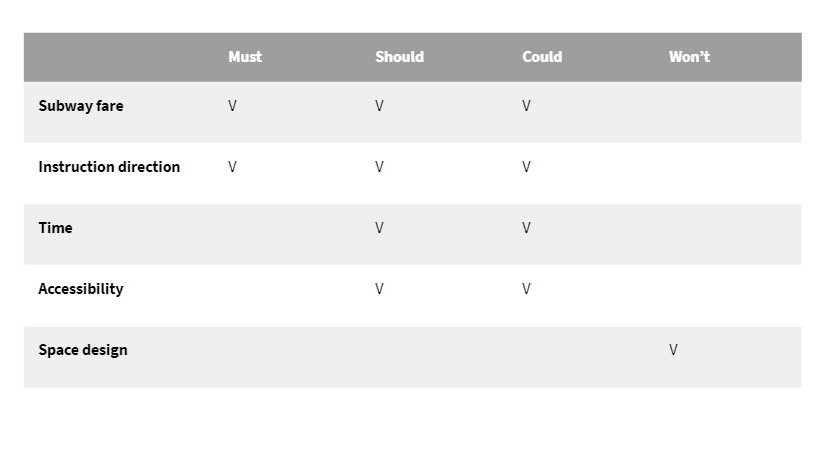

OMNY App
Year: 2020
Focus: UX research, UX/UI design, Prototyping
Skills: Qualitative research, Persona, Customer Journey Map, Competitive Analysis, User flow
This project is a UX design project that aims to solve the problems of accessibility and confusing layout design in NYC subway. It's an individual class project and the process includes ideation, research, prototype and evaluation. Combinding with OMNY system and Google map, I designed an OMNY mobile app with preplan and wallet features to reduce the confusion caused by complicated direction in subway station and inspect payment history at the same time.
Problem
The most common problem encountered by tourists in NYC MTA is getting in on the wrong side of a station where you can't cross from one side to the other without leaving the station. The design cause serious accessibility prolbem and duplicate payment issue. However, it's not feasible to reconstruct the layout of every subway station because of heavy workload as well as limited time and budget.
In this case, how might we improve traffic flow of NYC subway to avoid accebility and double payment problems ?
Research
Based on my problem statement, I conducted both qualitative and quantitative user research, including interview, survey and observation. Interview and observation allow me to understand the user journey, needs and painpoints in the context. Survey results comfirmed the problem exists and got a general thoughts about this issue from potiential user. These three phases are primary research where I got to know the user better. Competitive Analysis followed as a secondary research, where I synthesized all this data into insigts, persona and customer journey map.
Interview and observation
Regarding the interview, I found some key findings that users emphasized when facing the problem. First, all of the interviewees mentioned that they hate to pay twice but they have no choice when they’re in a rush or no MTA staff around. Secondly, they blamed unclear signs of direction is the main reason for the problem. Some of them mentioned they don’t like to waste their time on finding the right entrance or walking all the way back to the ground. Some of them mentioned the concern about accessibility in MTA since passengers with disabilities might encounter this problem more often.
Survey results
According to survey data, I found we have high demand for MTA which means that we can’t not give up subway and say oh that’s walk. We have to find a solution sooner or later. Every respondent has encountered the situation but not frequently and they all felt depressed when facing the situation.
In the survey, I ask them to rank the possible reasons for the problem, most of them blame the unclear entrance instruction rather than blaming their inattention. As for the solution, they prefer visual design and some of them think connecting with digital devices is a good idea. I took this result and map out the user journey map and persona.
Competitive Analysis
Before getting into my prototype design, I'd like to mention two relevant designs in competitive analysis. Omny, you might see it in some MTA stations. It’s a tap-to-pay system using contactless cards or smart devices to make fare payments at MTA. Although It’s very intuitive, it’s just a charging machine.
I believe everyone has used google map before. For me, I use it almost everyday for not only finding my way but also checking the subway schedule. Overall, google map is very functional and useful, yet there’s a drawback that MTA usually has a lot of entrances but Google map doesn’t show its detail when approaching the entrance. This’s one of the reasons for our problem.

Analysis
I synthesized the collected data from the primary and secondary research, sorted out features' priority with MoSCow, and finalized 3 insights.
Feature Prioritization-MoSCow
Insights
Customer Journey Map
Users usually feel alright until they find they’re in the wrong platform with no underpass. They have to walk the way back to street and find the entrance again. The process is time-consuming as well as tiring. Another point they feel frustrated is when they found out they pay twice due to a rush.
Integrated CJM
Simplified CJM

Needs and painpoints
Needs
Reduce the chances of detours and duplicate payments when finding the right entrance
Painpoints
- Duplicate payment
- Waste time
- Accessibility
Hypothesis
I believe that optimizing the direction instruction on entrances of subway station with technology will prevent the experience of getting into wrong platform for variety of groups including the elder, disability, and tourist...etc. Hence, I designed the OMNY app to improve the traffic flow and manage payment history.
I expect the change will reduce unnecessary time for finding platform, reduce duplicate payment and an more accessible environment for passengers.
Design and prototype
The solution is to extend the OMNY system to a mobile app which includes user's MTA record and preplan system. In the meanwhile, since people are highly dependent on google map when taking MTA, it’ll be more efficient and acceptable for the public adding new functions on the app they’ve already used. Thus, I combine OMNY app and Google Map to create a pre plan system that prevents detour and double payment in the MTA system. Users can use both the OMNY app and Google Map to pre plan your route and set up a detour alarm. Before getting into the entrance, you can tap your phone on the OMNY information machine on the ground and see if it’s the right entrance you want. This prevents users from going down the wrong entrace. Also, You're able to check again before entering the platform, so the chance of duplicate payment can be greatly reduced.
I was inspired by the cooperation mode between google map and uber. Google map provides the uber option when planning routes, and once you click it will connect to the Uber app directly.
User flow

OMNY app's Lo-fi wireframes
OMNY app has three panels, including map with route planning, OMNY record and user account.
High-fi prototype
When user tap their phone on information machine, the warning message appears if the setting in OMNY app is inconsistent with the entrance direction.
Final Design